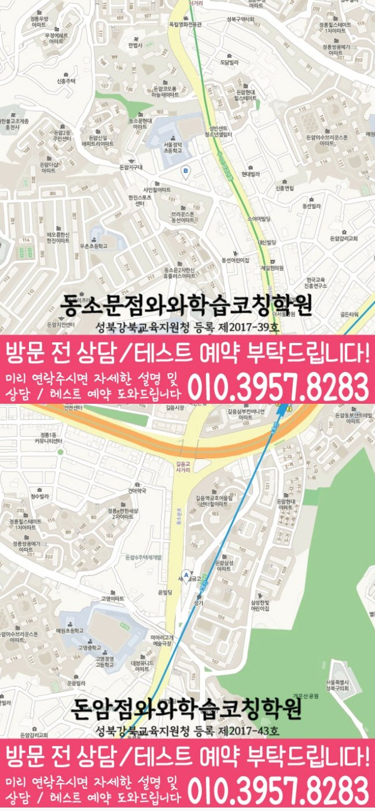

성북구 방문 정보
서울 성북구 아리랑로7길 5 4층 와와학습코칭학원에 있는 지점으로 안내됩니다. 위치 설명에는 ‘할머니문방구 사거리 건물 4층’라고 되어 있어 출발 전에 정확한 출입구와 시간을 확인해야 합니다.
WAWA LEARNING COACHING CENTER · 서울 성북구
동소문동 와와학습코칭센터 동소문점의 주소와 위치 설명, 영어·수학 학년 정보, 학교 참고 목록을 살펴보고 최근 답안과 학습 기록을 준비하세요.


CENTER AT A GLANCE
상담 전에는 와와학습코칭센터 동소문점의 위치를 먼저 확정하고 영어·수학 가운데 필요한 과목의 학년 표시를 찾아보세요. 이후 동소문동 학생이 받은 학교 시험 자료를 참고 학교 목록과 함께 확인하면 됩니다.
LOCAL SOURCE GUIDE
서울 성북구 아리랑로7길 5 4층 와와학습코칭학원에 있는 지점으로 안내됩니다. 위치 설명에는 ‘할머니문방구 사거리 건물 4층’라고 되어 있어 출발 전에 정확한 출입구와 시간을 확인해야 합니다.
확인 가능한 과목·학년은 영어는 초3, 초4, 초5, 초6, 중1, 중2, 중3, 고1, 고2; 수학은 초3, 초4, 초5, 초6, 중1, 중2, 중3, 고1, 고2입니다. 이는 제공 자료의 기록이며 현재 등록 가능성을 보장하는 문구가 아닙니다.
페이지 근거 자료에 정덕초, 우촌초, 정수초, 성신여중, 동구여중, 삼선중 외 5곳, 총 11곳이 적혀 있습니다. 학교별 학년·시기 차이는 별도로 확인해야 합니다.
SUBJECT & GRADE
초3, 초4, 초5, 초6, 중1, 중2, 중3, 고1, 고2
초3, 초4, 초5, 초6, 중1, 중2, 중3, 고1, 고2
LEARNING FLOW
진단 질문은 ‘몇 점인가’에서 끝내지 말고 어떤 단원에서 왜 멈췄는지, 다시 풀었을 때 해결됐는지까지 이어가야 합니다.
한 주의 필수 과제와 여유가 있을 때 할 과제를 나누고, 시험 일정이 바뀌면 우선순위부터 다시 조정합니다.
재학습 우선순위는 자주 틀린 문제, 다음 단원과 연결되는 개념, 시험 범위에 포함된 항목 순으로 검토합니다.
SCHOOL REFERENCE
학교명은 지역 상담의 맥락을 확인하기 위한 참고 정보입니다. 동소문동 학생의 현재 시험 일정과 과목별 범위가 페이지 목록보다 우선합니다.
PARENT CONSULTATION SCENARIO
동소문동 학교 일정과 개인 진도가 자주 어긋난다면 실제 공부 가능 시간을 기준으로 주간 계획을 다시 비교해 보세요. 와와학습코칭센터 동소문점 상담을 준비할 때 다음 기준을 함께 보세요. 와와학습코칭센터 동소문점 상담에서는 최근 시험지와 실제 학습 기록을 비교해 이런 어려움이 생긴 지점을 설명할 수 있습니다.
학습 기록을 설명하는 연습용 사례로 구성했습니다. 학생 개인의 실제 경험 또는 성적 결과를 나타내지 않습니다.
QUESTIONS & ANSWERS
완료한 계획과 끝내지 못한 계획을 모두 가져가고 이유를 짧게 적어 주세요. 시험지의 반복 실수와 학교 일정도 함께 보면 우선순위를 비교하기 쉽습니다.
공통자료에는 영어 초3, 초4, 초5, 초6, 중1, 중2, 중3, 고1, 고2; 수학 초3, 초4, 초5, 초6, 중1, 중2, 중3, 고1, 고2로 기재되어 있습니다. 페이지의 학년 표시는 확인 출발점이며 실제 수업 시간과 반 구성은 별도 정보입니다.
와와학습코칭센터 동소문점에 현재 진도와 가능한 공부 시간을 알려 주고, 영어·수학 과목마다 현실적으로 끝낼 수 있는 기준을 비교해 보세요.
정답을 확인한 직후 한 번, 며칠 뒤 빈 종이에서 한 번 더 풀어야 설명을 기억한 것인지 스스로 해결한 것인지 구분할 수 있습니다.
원자료의 학교 항목에는 정덕초, 우촌초, 정수초, 성신여중, 동구여중, 삼선중이 포함됩니다. 내신 준비 순서는 페이지가 아니라 학생이 받은 학교 자료로 결정하세요.
상담 전 체크
현재 가장 어려운 과목, 가능한 공부 시간, 동소문동 학교 일정을 정리하면 필요한 안내를 놓치지 않습니다.